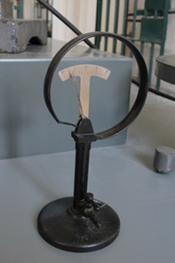

Manometro di Bourdon
Scuola di provenienza: Liceo statale "P.E. Imbriani", Avellino
Settore: Meccanica
Costruttori: Paravia, Italia
Materiali: Ferro, alluminio
Accessori: Nessuno
Stato di conservazione: : Buono nel complesso; la lancetta dell’indice non è centrata
Descrizione: Il manometro è un tubo cavo con parete molto sottile e può essere usato con la pompa pneumatica che aspira aria o soffia aria. Nel primo caso il cerchio, cavo all’interno, si stringe e l’indice, comandato da un semplice sistema di leve, si muove in un verso. Nel secondo caso il cerchio si gonfia e la lancetta si muove nel verso opposto.